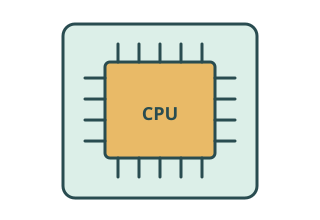
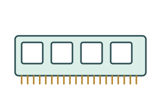
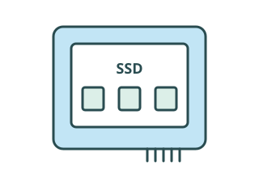
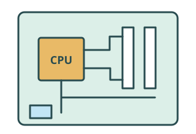
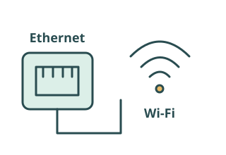
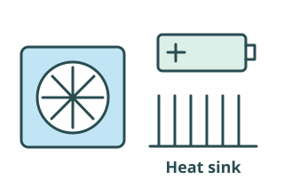

Overview
What you should know by the end of this lesson
Hardware questions are often really suitability questions. You need to recognise the type of system being described, name the important internal components, and explain why those choices fit the situation.
Learning goals
- Identify common computer system types clearly.
- Explain the role of key internal components in each system.
- Compare how hardware priorities change from one system to another.
- Justify why one device type fits a task better than another.
Why it matters
The same CPU, memory, storage, and interface ideas appear in phones, desktops, tills, smart TVs, thin clients, and cloud servers. Strong exam answers explain both the hardware and the purpose behind it.
System Types
The four computer system types
In the exam, you are expected to recognise and understand the differences between these four types of computer system.
Multi-functional devices
A computer system designed to perform several related functions within one device.
Personal computers
A general-purpose computer intended primarily for an individual user.

Mobile devices
A compact computer designed to be carried and used while travelling.

Servers
A computer system that provides resources, services, storage or processing to other computers or devices.
System Types
Multi-functional devices
What it is
A computer system designed to perform several related functions within one device.
Examples: Printer/scanner/copier; smart television with broadcast TV, streaming and apps.
Main priorities
Convenience, integration, compactness, reliability and ease of use.
Advantages
- Several functions in one device save space.
- Fewer separate devices to manage; often cheaper than buying specialist devices separately.
Trade-offs
- Less specialised than dedicated equipment; limited upgrades.
- Failure of one unit can remove several functions.
An embedded controller is a small built-in computer that manages device tasks, such as scanning and printing.
System Types
Personal computers
What it is
A general-purpose computer intended primarily for an individual user.
Examples: Desktop PC; laptop.
Main priorities
Flexibility, balanced components, software compatibility and expansion where possible.
Advantages
- Wide software support for many different tasks.
- Supports many peripherals; desktops can often be upgraded or repaired easily.
Trade-offs
- Desktops are not very portable; laptops may limit upgrades.
- Can use more power than specialised or mobile devices.
Graphics hardware (a GPU) processes graphics and display work, useful for a designer working with images.
System Types
Mobile devices
What it is
A compact computer designed to be carried and used while travelling.
Examples: Smartphone; tablet.
Main priorities
Portability, low weight, battery life, energy efficiency, compact components, wireless connectivity and efficient heat removal.
Advantages
- Usable away from mains power.
- Built-in communication and convenient touch interfaces.
Trade-offs
- Limited upgrades and smaller screens or interfaces.
- Battery and heat constraints often limit sustained performance compared with larger systems.
A system-on-chip (SoC) combines several functions, such as processing and graphics, on one compact chip.
System Types
Servers
What it is
A computer system that provides resources, services, storage or processing to other computers or devices.
Examples: File server; web server; database server; authentication server (checks user identities).
Main priorities
Reliability, uptime, multiple users, network throughput (data moved per second), reliable storage, cooling and scalability (room to grow).
Advantages
- Centralised resources and easier central management.
- Can serve many users; dedicated server hardware is designed for continuous operation.
Trade-offs
- Dedicated systems often cost more, use more power and need specialist administration.
- Failure may affect many users. Redundancy means spare or duplicate parts/services help keep it running.
A server is defined by its role: it does not have to be a rack-mounted machine.
Compare
Different systems, different priorities
| System type | Main purpose | Main strengths | Typical priorities | Typical trade-off |
|---|---|---|---|---|
| Multi-functional device | Combine related tasks | Convenience; fewer devices | Integration; ease of use | One failure can remove several functions |
| Personal computer | Flexible individual work | Software and peripherals | Balance; compatibility; expansion | Desktop portability / laptop upgrades |
| Mobile device | Computing on the move | Lightweight; wireless | Battery life; efficiency | Small interface; heat and battery limits |
| Server | Serve other devices | Shared resources; many users | Uptime; networking; reliable storage | Cost; power; shared impact of failure |
Read the role in the scenario. A laptop is a personal computer that is portable; a smartphone is a mobile device even though it performs many functions.
Internal Components
Same basic jobs, different physical forms
Mental model
Most systems have the same core jobs inside
CPU
Runs instructions and coordinates processing
RAM
Holds active programs and working data
Storage
Keeps programs and data when power is off
Motherboard and buses
Connect parts so data and control signals can move
Network interface
Connects the system to other devices and services
Power and cooling
Keeps the system supplied, stable, and within safe
temperatures
Graphics or display hardware
Processes graphics and display work
The names can change between devices. A desktop may have separate parts, a phone may combine many of them into a system-on-chip, and a printer may use an embedded controller, but the internal jobs are still recognisable.
Internal Components
CPU — Central Processing Unit

Its job
Executes instructions, performs calculations and logical operations, and coordinates much of the computer’s processing.
Make the connection
When a program compares two values or calculates a total, the CPU carries out that processing.
Why it matters
Demanding systems may need more processing capability to handle their workload.
Internal Components
RAM — the working area

Its job
Holds programs and data currently being used so the CPU can access working data quickly.
Make the connection
RAM is volatile: its contents are lost when power is removed. Storage keeps saved files long term.
Why it matters
Multitasking systems need sufficient RAM for their active programs and data.
Internal Components
Storage — keeping data long term

Its job
Non-volatile storage holds the operating system, applications and user files. It retains data when power is removed.
Make the connection
An SSD or built-in storage chips can hold a saved photograph even when the device is switched off.
Why it matters
A file server needs reliable storage because users depend on access to saved files.
Internal Components
Motherboard and buses — connecting the parts

Its job
The motherboard is the main circuit board. Its sockets, connections and interfaces connect internal components.
Make the connection
Buses are pathways that carry data and control signals between components. They let the connected parts communicate.
Why it matters
Every system needs connections between its parts, even when functions are combined in compact hardware.
Internal Components
Network interface — communicating

Its job
Enables communication with other systems and networks, through a wired or wireless connection.
Make the connection
Ethernet provides a wired connection; Wi-Fi provides a wireless connection.
Why it matters
Servers share resources over a network; mobile devices connect while moving; network printers receive shared print jobs.
Internal Components
Power and cooling — keeping a system running

Components need electrical power and generate heat as they work.
Power
Suitable power delivery keeps components working. Desktops and servers commonly use dedicated power supplies; mobile devices rely on batteries and energy efficiency.
Cooling
Heat sinks spread and release heat; fans move air; passive cooling works without powered fans. Inadequate cooling can cause overheating, reduced performance and unreliable operation.
Working Together
From storage to processing to output
1. StorageA program or file is kept long term.
2. RAMThe active program’s needed data is loaded into working memory.
3. CPUInstructions and data are processed.
4. Output / network / storageResults are displayed, sent or saved.
Opening a photograph
The image is stored on the SSD → image data is loaded into RAM → the CPU/GPU processes it → the image appears on the display.
This is a simplified model of the jobs involved, not a complete architecture diagram. Components communicate in both directions; saving is needed to keep changes after power is removed.
Apply
Hardware choices depend on purpose
Component/system feature → reason → scenario
Weak
A server needs RAM, storage and a CPU.
Better
A file server needs sufficient RAM and reliable network hardware because many users may request files at the same time.
Try the same pattern
A mobile device needs an efficient processor because it must preserve battery life while operating away from mains power.
Choose features that meet the task. More powerful hardware is not automatically better if it wastes battery, space or money.
Classroom Activity
Match the scenario
Choose a system type and the priority that best explains each scenario. Check each pair for feedback.
Scenario A
Students need touch-screen tablets they can carry between lessons and use all day away from sockets.
Scenario B
A school needs central file storage for hundreds of students and staff.
Scenario C
An office wants one shared device that prints, scans and copies.
Scenario D
A graphic designer needs specialist software and several peripherals for flexible work at a desk.
Scenario E
A web application must remain available to thousands of users.
Scenario F
A delivery driver needs navigation, communication and data access while travelling.
Exam Traps
Common mistakes with system types and internal components
Most lost marks come from vague hardware lists or from choosing a system type without linking it to the scenario.
Naming parts without purpose
Writing "CPU, RAM, storage" is not enough on its own.
Fix: Explain what each part helps the system do in that scenario.
Treating all systems as the same
Students sometimes describe a server like a desktop PC.
Fix: Focus on who uses the system, how many users it supports, and which feature matters most.
Ignoring trade-offs
A more powerful part is not always the best answer.
Fix: Mention portability, cost, power use, or reliability where relevant.
Confusing RAM and storage
RAM is for active working data. Storage keeps data and programs long term.
Fix: Use "volatile" for RAM and "non-volatile" for storage when that distinction helps your answer.
Quiz
Check your understanding
Answer all ten questions, then check your score. Your choices and best score save in this browser so you can revisit the lesson later.
Exam-Style Practice
Try longer answers like the ones used in written papers
These questions need fuller explanations than the quick quiz. Type your answers straight into the page, then compare your ideas with the answer guide.
Draft answers save automatically in this browser.
Question 1
Explain why a mobile device and a server usually need different internal component priorities.
Show answer guide
- Mobile devices prioritise portability and battery life.
- They often use low-power processors and compact flash storage.
- Servers prioritise performance, reliability, and support for many users.
- They commonly need more RAM, stronger networking, and more resilient storage.
Question 2
A college wants a new shared print-and-scan station for staff. Discuss why a multi-functional device may be more suitable than a personal computer with a separate printer and scanner.
Show answer guide
- A multi-functional device combines printing, scanning, and copying in one system.
- It can reduce desk space, cabling, and device management overhead.
- Shared networking features may make it easy for several staff members to use.
- It may also reduce cost compared with buying separate devices.
- A trade-off is that if the device fails, several functions are lost at once.
- The final judgement depends on how much specialisation and resilience the college needs.
Question 3
A medical clinic wants tablets for nurses on wards and a central server for patient records. Analyse how the internal component priorities would differ between the two systems.
Show answer guide
- Tablets should prioritise battery life, low-power processing, compact flash storage, touch input support, and wireless networking.
- The tablet design supports portability because nurses need to carry the device and use it away from a desk.
- The server should prioritise sufficient RAM, reliable storage, strong network interfaces, and cooling because many users may access records.
- A strong answer links each component to the clinic context, such as uptime, data access, user workload, and practical working conditions.
- A balanced answer also mentions trade-offs such as cost, power use, portability, security, and what happens if a shared system fails.